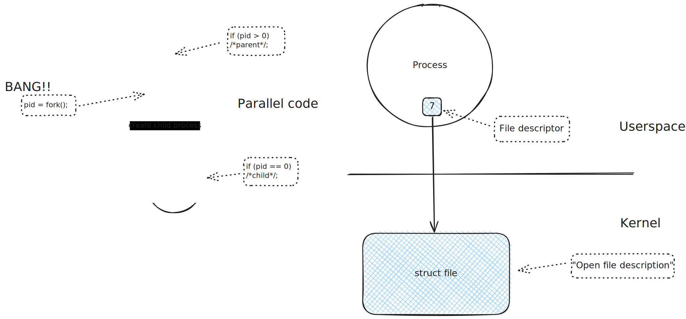

Linux Systems Programming#
The material below covers “what an old UNIX greybeard knows about his favorite OS”. It is not to be seen as classical slide material, but rather as support material for didactical live programming [2].
It is not meant to be complete, and it never will be. I leave that task to other authorities - Michael Kerrisks site is heavily cited from here; he offers courses at that level.
Note that this is not an agenda for a single course. This material is a set of building blocks, used to compose a course that is adapted to the audience.
Fundamentals#
This section covers the stone-old UNIX concepts [1] that Linux has expanded where necessary (embedded hardware is just a file too). It forms the absolute basis for any kind of serious system level programming.
Event Driven Programming#

In this section we will develop a semi-realistic application that sits upon a “database”. The application receives input and commands from multiple data sources - and it is single threaded.
Based upon our knowledge of file descriptors (“everything is a file”), we learn how to use advanced I/O multiplexing system calls to dispatch events from multiple sources inside an application that is highly reactive.
Multithreading#
Outdated This is course material which has done its duty already. It is in the queue for refactoring, so it will look like the “regular” material above. It can be booked nonetheless; in this case the booked topics will receive extra priority points for refactoring 😉.
Inter Process Communication#
Outdated This is course material which has done its duty already. It is in the queue for refactoring, to make it look like the “regular” material above. It can be booked nonetheless; in this case the booked topics will receive extra priority points for refactoring 😉.
Scheduling And Realtime#
Outdated This is course material which has done its duty already. It is in the queue for refactoring, to make it look like the “regular” material above. It can be booked nonetheless; in this case the booked topics will receive extra priority points for refactoring 😉.
Graphical Overview#
Ad-Hoc Live Demos#
Building Blocks For Sketches#
{kind=link}
Footnotes